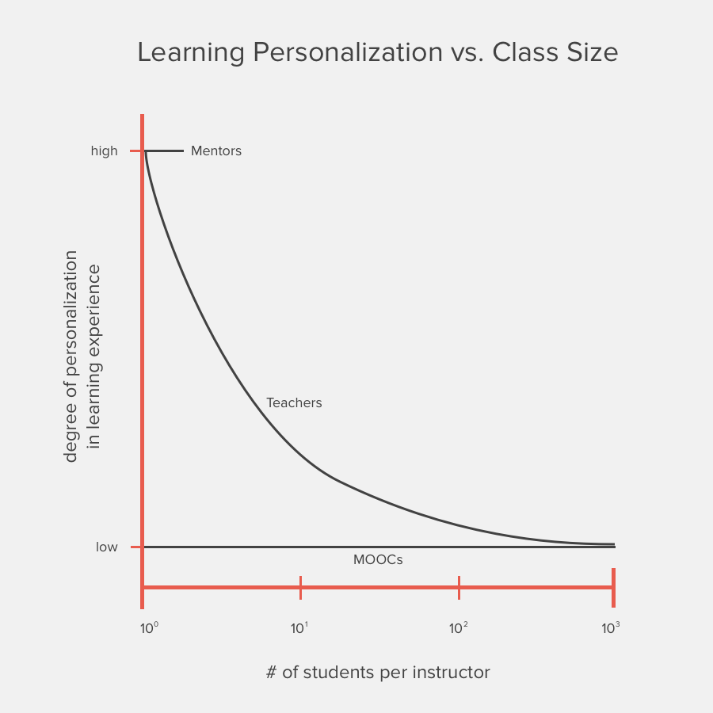

Mentors and MOOCs (massive open online courses) carve out the two ends of a spectrum that represents the level of personalization in a learning experience.
On one end, you have mentors. A good mentor takes into account the student’s individual objectives, learning style, personal weaknesses, and progress-to-date to craft a unique approach to helping that student learn and grow. This one-to-one relationship represents the ceiling in how personalized a learning experience could be. Unfortunately, a mentor is only able to provide this level of engagement to a small number of students.
MOOCs sit on the other end of this spectrum. In their current state, the learning experience that a MOOC provides is very much a fixed experience. Whether one student or a thousand students enroll the course, the curriculum delivered and, consequently, level of personalization remains unchanged.
When these characteristics are separated from each other and plotted on two axes, it reveals an interesting insight into the difficult role that professors and teachers have.
The Dynamic Role of Teachers
As a collective group, teachers provide the full gamut of degrees of learning personalization, depending on class size. When a teacher has just one student, that teacher is, for all intents and purposes, a mentor. As the class size increases to ten students, the teacher begins to reach the limits of their ability to mentor each student. A class size of one hundred pushes the limit of how many students the teacher may simply be able to interact with in some small way.
This plot may shift left or right a bit, but the key takeaway here is this: the more students a teacher must work with, the lower the degree of personalization the teacher is capable of providing.
Now, the nature of a logarithmic relationship suggests that regardless of class size, the teacher will never provide a learning experience that dips below the minimum level of personalization currently offered by MOOCs. However, I will argue that there exists some threshold quantity of students whereby the learning experience offered by a live teacher is effectively equivalent to that of a MOOC.
My plot, which is entirely arbitrary, conveniently suggests that teachers are not capable of providing a greater level of learning personalization than a MOOC is when the class size is greater than one hundred students.
From an anecdotal point of view, this seems about right. There are certainly university classes where the class size is so large that a student may never have any interaction with the professor, making it essentially equivalent to that of a MOOC.
At Stanford last year, the largest lectures in the undergraduate program were at this 100+ student threshold [1].
The Seed of Disruption
Whether this Teacher-MOOC Point of Equivalence occurs at a class of one hundred or 150, there does exist some small quantity of university classes that are above that threshold. This suggests that some application of MOOCs is ready to disrupt the traditional classroom experience.
This is entirely in line with Clayton Christensen’s theory of disruptive innovation, which suggests that a disruptive innovation starts by undercutting the established solution by first appealing to the demands of the low end of the market. The classes that are so large that students have limited or no direct interaction with the professor offer the lowest value in the university experience.
Figure I.1 of The Innovator’s Dilemma [2].
The quantity of classes that this disruption applies to will only increase in time as the capabilities of machine learning improves. As these technological advances are made, the level of learning personalization offered by a MOOC will climb, thereby shifting the Teacher-MOOC Point of Equivalence to a smaller and smaller class size.
A Hybrid Learning Experience
In his latest book, Zero to One, Peter Thiel argues that the near-term future of computers will not be to replace humans (teachers), but rather to better enable and equip humans (teachers) [3].
Whether the manifestation of this disruption occurs within higher education or as a high-growth startup, I believe the next implementation stage of MOOCs will be a Teacher-MOOC hybrid approach, starting as a replacement for the largest university classes.
In the traditional education experience, students attend lectures to remember, understand, and begin to apply new principles. These are the lower-order thinking skills of Bloom’s Taxonomy of Education Objectives [4]. Students then process this new information by moving through the higher-order thinking skills — analyze, evaluate, and create — at home, through projects and assignments.
The Flipped Classroom is an educational model that has gained recent traction. In this model, students move through the lower-order thinking skills at home, where they watch pre-recorded video lectures and read assigned sections. When students come to class, the teacher is able to guide them through higher-order thinking exercises.
A Teacher-MOOC hybrid would manifest itself well in the Flipped Classroom model. Students would watch a video lecture at home that is delivered not necessarily from their own professor or their own university, but from a professor who better appeals to that individual’s learning style.
By using MOOCs to deliver the new material for each upcoming class, it frees up the time of the teacher. The teacher would then be able to spend more time with each individual student as they apply the new material.
References:
- http://ucomm.stanford.edu/cds/2014
- Christensen, Clayton M. The Innovator’s Dilemma: When New Technologies Cause Great Firms to Fail. Boston, MA: Harvard Business School, 1997. Print.
- Thiel, Peter A., and Blake Masters. Zero to One: Notes on Startups, or How to Build the Future. Print.
- http://www.celt.iastate.edu/teaching-resources/effective-practice/revised-blooms-taxonomy/